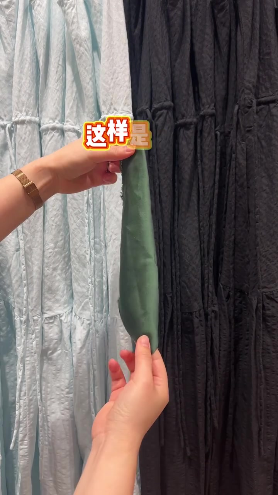
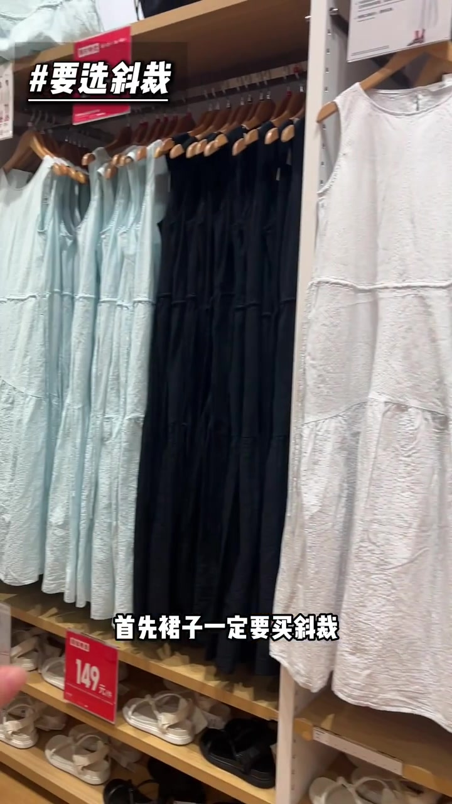
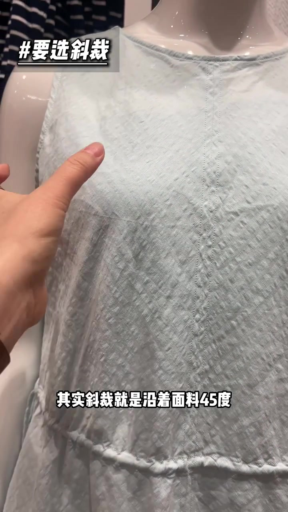
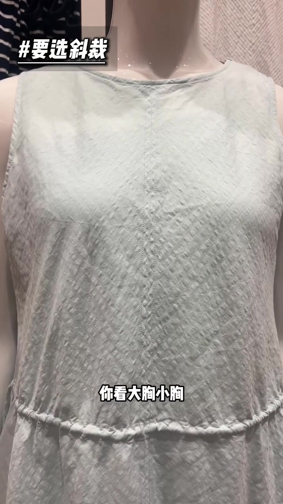
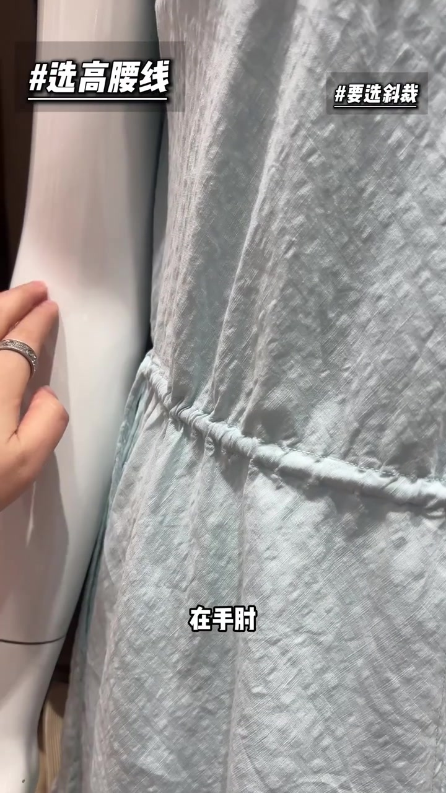
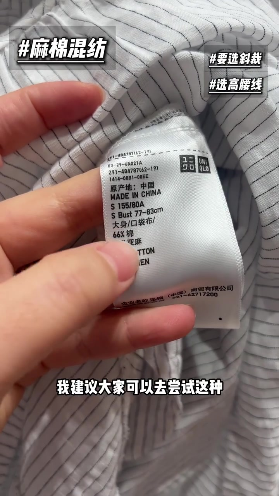
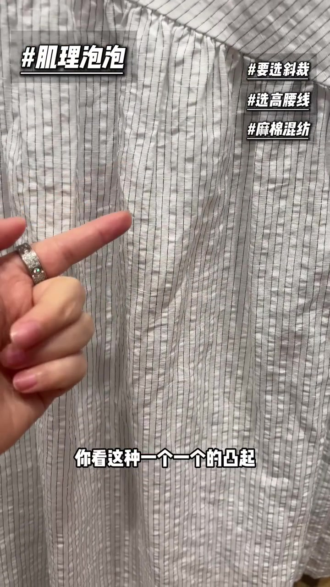
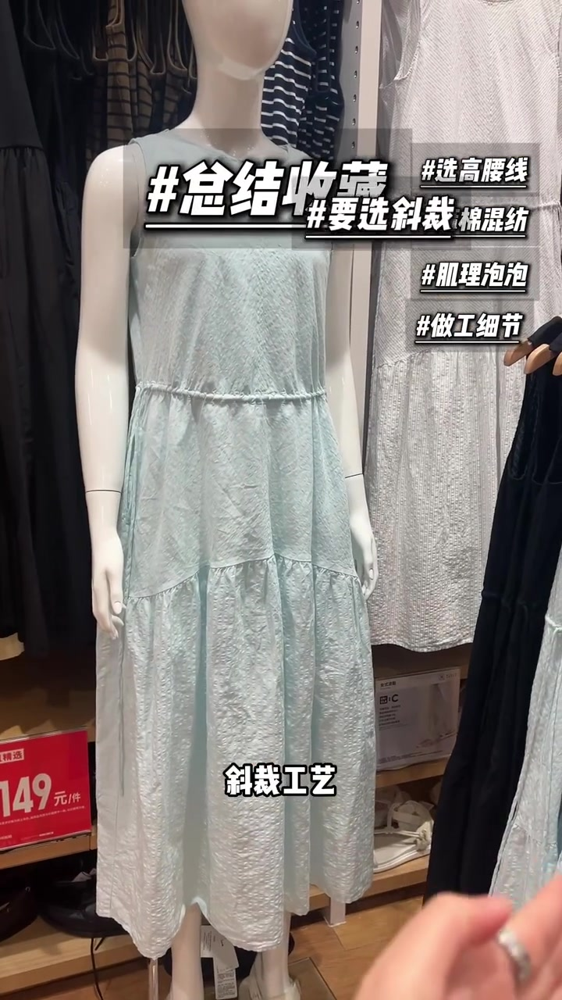

开场：夏天连衣裙，先看斜裁还是直裁
视频一开头就拿两块裁剪方式做对比：一边是直裁，一边是斜裁。博主说，夏天想要一件既舒适又显高显瘦的连衣裙，先盯住几个硬性指标——其中第一条，裙子一定要买斜裁。

直裁顺着面料经纬（纱向）垂直裁剪，几乎没有弹性；斜裁则沿着面料 45 度斜向裁剪，更费料，但弹性更大。博主拿优衣库这条连衣裙举例，手摸袖笼附近演示斜裁走向。


斜裁带来的穿着感：自动调节、更垂、更舒服
接着博主强调斜裁的实际体感：大胸、小胸都能自动调解，不会有束缚感；垂感也更好。她认为斜裁尤其适合连衣裙，能显著提升舒适度。

显瘦显高小妙招：找手肘附近的高腰线
「顺便教大家一个连衣裙显瘦显高的小妙招」——直接去找腰线在手肘，或者手肘向下三公分的位置，这就是高腰线。高腰线可以美化身材比例；即便上下身接近五五分，也能穿出三七左右的视觉比例。

夏天面料：丝太贵、麻扎人、化纤透气差，试试麻棉混纺
讲完版型，博主转入面料。夏天常见选择各有短板：丝太贵、麻扎人、化纤透气差一截。她建议尝试麻棉混纺——结合麻与棉两者优点，既亲肤舒适又透气干爽。画面特写优衣库吊牌：大身 / 口袋布为 66% 棉、34% 亚麻。

材质之外还要看结构：表面肌理泡泡纱
「夏天想舒适凉爽，面料材质是一方面，面料纺织结构也不容忽视。」博主让大家多选表面带肌理的面料——一个个凸起像小气泡，也叫泡泡纱。这种泡泡是纺织过程中织出来的，不是机器压出来的，所以洗多少次也不易坍塌，抗皱性也更好；即便棉麻爱皱，褶皱在视觉上也不太明显。
更关键的体感逻辑是：表面肌理让面料与皮肤接触面积变少，出汗也不粘身——「妥妥的行走小空调」。

做工细节：袖笼本布贴边，内里开骨缝合
最后落到工艺。无袖衣服的袖笼，建议选本布贴边——简洁高级、低调显质感。夏天衣服薄，舒适度更重要；贴着身体的缝份尽量选开骨缝合，更薄、整体更舒服。
收尾：五个选购细节照着挑
视频最后在人台全身裙前做总结，列出五个细节：斜裁工艺、手肘高腰线、棉麻混纺、肌理泡泡纱、袖笼本布贴边与内里开骨缝合。「你就照着这些细节去挑。」
- 斜裁工艺
- 手肘（或肘下约 3cm）高腰线
- 棉麻 / 麻棉混纺
- 肌理泡泡纱（织造肌理，非压花）
- 袖笼本布贴边 + 内里开骨缝合
